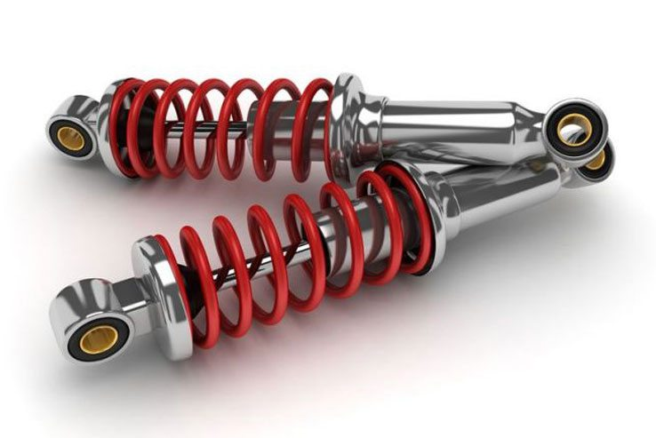

Suspension System
The suspension system supports the vehicle’s weight, absorbs road shocks, and maintains tire contact with the road. It includes springs, shock absorbers, struts, control arms, and sway bars.
How Suspension Works
- Springs: Support vehicle weight and absorb bumps.
- Shock Absorbers: Dampen vibrations and control rebound motion.
- Struts: Combine spring and shock absorber in one unit.
- Sway Bars: Reduce body roll during cornering.
Key Components
- Springs (Coil/Leaf): Store energy from impacts and maintain ride height.
- Shock Absorbers: Control spring movement and ensure ride comfort.
- Struts: Structural components that also dampen motion.
- Control Arms: Link the wheels to the frame while allowing vertical movement.